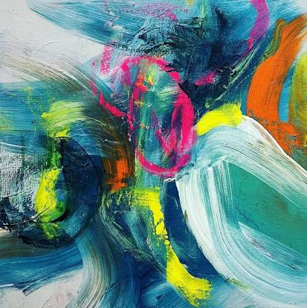

การวิจารณ์งานศิลป์
การวิจารณ์งานศิลปะ คือการพิจารณา ประเมิน และตีความผลงานศิลป์อย่างมีหลักการ เพื่อเข้าใจความหมาย คุณค่า และเจตนาของผู้วาด โดยทั่วไปมี 4 ขั้นตอนหลัก: การระบุข้อมูล (Description): บันทึกสิ่งที่มองเห็น เช่น ชื่อผลงาน ศิลปิน ประเภทงาน เทคนิค สี หรือรูปทรงที่ใช้ การวิเคราะห์ (Analysis): พิจารณาการจัดองค์ประกอบศิลป์ เช่น การจัดวางสมดุล การใช้แสงเงา น้ำหนักเส้น และการประสานกลมกลืนของสี การตีความ (Interpretation): ค้นหาความหมาย ข้อคิด หรืออารมณ์ความรู้สึกที่ศิลปินต้องการสื่อสารผ่านผลงาน การประเมินค่า (Evaluation): สรุปคุณค่าของผลงานทั้งในด้านความงาม ความคิดสร้างสรรค์ และความสำเร็จในการสื่อสาร